![]()
knitr::opts_chunk$set(echo = TRUE,
dev = "svg",
fig.align = "center",
cache = TRUE)
options(htmltools.dir.version = FALSE,
crayon.enabled = TRUE) # for nice printing
knitr::opts_chunk$set(warning = FALSE,
message = FALSE,
global.par = TRUE,
dev = "svg")
ansi_aware_handler <- function(x, options) {
paste0(
"<pre class=\"r-output\"><code>",
fansi::sgr_to_html(x = x, warn = FALSE, term.cap = "256"),
"</code></pre>"
)
}
knitr::knit_hooks$set(
output = ansi_aware_handler,
message = ansi_aware_handler,
warning = ansi_aware_handler,
error = ansi_aware_handler
)Statistical Methods for Replication Assessment
Replicability Crisis in Science?
What is considered a successful or unsuccessful replication?
Some (random) concepts
Some (random) concepts
Credibility of scientific claims is established with evidence for their replicability using new data (Nosek and Errington 2020)
Replication is repeating a study’s procedure and observing whether the prior finding recurs (Jeffreys 1973)
Replication is a study for which any outcome would be considered diagnostic evidence about a claim from prior research (Nosek and Errington 2020).
Difficulty in drawing conclusions from replications
Replication is often intended as conditioned to the original result. The original result could be a false positive or a biased result. Also the replication attempt could be a false positive or a false negative (Nosek and Errington 2020).
. . .
To be a replication, two things must be true. Outcomes consistent with a prior claim would increase confidence in the claim, and outcomes inconsistent with a prior claim would decrease confidence in the claim (Nosek and Errington 2020).
. . .
This is somehow similar with a Bayesian reasoning where evidence about a phenomenon is updated after collecting more data.
Exact and Conceptual replications
Exact replications are commonly considered as the gold-standard but in practice (especially in Social Sciences, Psychology, etc.) are rare.
Let’s imagine, an original study \(y_{or}\) finding a result.
- Replication \(y_{rep}\) with the exact same method find the same result. Replication or not?
- Replication \(y_{rep}\) with a similar method find the same result. Replication or not?
- Replication \(y_{rep}\) with similar method did not find the same result. Replication or not?
Direct and Conceptual replications (S. Schmidt 2009)
A direct replication is defined as the repetition of an experimental procedure.
A conceptual replication is defined as testing the same hypothesis with different methods.
Exact replications are (often) impossible (S. Schmidt 2009)
Let’s imagine an extreme example: testing the physiological reaction to arousing situation:
- The original study: Experiment with prehistoric reacting to an arousing stimulus
- The actual replication: It is possible to create the exact situation? Some phenomenon changes overtime, especially people-related phenomenon
Exact replication is often not feasible. Even using the same experimental setup (direct replication) does not assure that we are studying the same phenomenon.
As Exact as possible…
Even when an experiment use almost the same setup of the original study there is a source of unknown uncertainty. Which is the impact of a slightly change in the experimental setup on the actual result?
- A study on the human visual system: presenting stimuli on different monitors –> small change with a huge impact
- A study on consumer behavior: participant answering question using a smartphone or a computer –> small but (maybe) irrelevant change
How to evaluate the actual impact?
What we are going to do?
What we are (not) going to do?
. . .
- I will not present a strictly theoretical and philosophical approach to replication (what is a replication?, what is the most appropriate definition?, etc.). But we can discuss it together 😄!
. . .
- According to the replication definitions and problems, we will explore some statistical methods to evaluate a replication success
Overall model and notation
Overall model and notation
For the purpose of notation and simplicity we can define a meta-analytical-based replication model (Hedges and Schauer 2019c; J. M. Schauer and Hedges 2021; Jacob M. Schauer 2022)
\[ y_i = \mu_{\theta} + \delta_i + \epsilon_i \]
\[ \delta_i \sim \mathcal{N}(0, \tau^2) \]
\[ \epsilon_i \sim \mathcal{N}(0, \sigma^2_i) \]
Overall model and notation
- Thus each study \(i\) out of the number of studies \(k\).
- \(\mu_{\theta}\) is the real average effect
- \(\mu_{\theta} + \delta_i\) is the real effect of each study where \(\delta_i\) is the study-specific deviation from the overall effect
- \(\tau^2\) is the real variance among different studies. When \(\tau^2 = 0\) there is no variability among studies
- \(\epsilon_i\) are the sampling errors that depends on \(\sigma^2_i\), the sampling variability of each study (i.e., how imprecise is the estimation). \(\sigma^2_i\) (that depends on the study variance and sample size) determine how precise is the estimation of each \(\mu_{\theta} + \delta_i\).
- With \(\theta_i\) we define the study specific effect i.e. \(\mu_{\theta} + \delta_i\) for simplicity
- The observed effect \(y_i\) is an estimate of \(\theta_i\)
- We define \(\theta_{orig}\) (or \(\theta_1\)) as the original study and \(\theta_{rep_i}\) (with \(i\) from 2 to \(k\)) as the replication studies
Overall model and notation
For the examples we are going to simulate (unstandardized) effect sizes (see Slide “Extra - Simulating Meta-Analysis” of the meta-analysis workshop). Basically:
\[ \Delta = \overline{X_1} - \overline{X_2} \]
\[ SE_{\Delta} = \sqrt{\frac{s^2_1}{n_1} + \frac{s^2_2}{n_2}} \]
With \(X_{1_j} \sim \mathcal{N}(0, 1)\) and \(X_{2_j} \sim \mathcal{N}(\Delta, 1)\)
continue…
Overall model and notation
Thus our observed effect sizes \(y_i\) is sampled from: \[ y_i \sim \mathcal{N}(\mu_\theta, \tau^2 + \frac{1}{n_1} + \frac{1}{n_2}) \]
Where \(\frac{1}{n_1} + \frac{1}{n_2}\) is the sampling variability (\(\sigma^2_i\)).
The sampling variances are sampled from:
\[ \sigma_i^2 \sim \frac{\chi^2_{n_1 + n_2 - 2}}{n_1 + n_2 - 2} (\frac{1}{n_1} + \frac{1}{n_2}) \]
Overall model and notation
Everything is implemented into the sim_studies() function:
sim_studies <- function(k, theta, tau2, n0, n1, summary = FALSE){
yi <- rnorm(k, theta, sqrt(tau2 + 1/n0 + 1/n1))
vi <- (rchisq(k, n0 + n1 - 2) / (n0 + n1 - 2)) * (1/n0 + 1/n1)
out <- data.frame(yi, vi, sei = sqrt(vi))
if(summary){
out <- summary_es(out)
}
return(out)
}sim_studies(k = 10, theta = 0.5, tau2 = 0.1, n0 = 30, n1 = 30)#> yi vi sei
#> 1 0.2836125 0.07004730 0.2646645
#> 2 0.3660144 0.07467576 0.2732687
#> 3 0.1170780 0.07221376 0.2687262
#> 4 0.5674445 0.04721063 0.2172801
#> 5 0.8815716 0.05712881 0.2390163
#> 6 0.6291894 0.05234471 0.2287897
#> 7 0.5272861 0.06509992 0.2551469
#> 8 0.6606526 0.06059288 0.2461562
#> 9 0.7534703 0.06028277 0.2455255
#> 10 0.2909813 0.05939751 0.2437160
Exact vs Approximate replication
This distinction (see Brandt et al. 2014 for a different terminology) refers to parameters \(\theta_i\). With exact are considering a case where:
\[ \theta_1 = \theta_2 = \theta_3, \dots, \theta_k \]
Thus the true parameters of \(k\) replication studies are the same. Thus the variability among true effects \(\tau^2 = 0\).
Similarly, due to (often not controllable) differences among experiments (i.e., lab, location, sample, etc.) we could expect a certain degree of variability \(\tau^2\). In other terms \(\tau^2 < \tau^2_0\) where \(\tau^2_0\) is the maximum variability (that need to be defined). In this way studies are replicating:
\[ \theta_i \sim \mathcal{N}(\mu_\theta, \tau^2_0) \]
Types of agreement
Coarsely, we can define a replication success when two or more studies obtain the “same” result. The definion of sameness it is crucial:
- same sign or direction: two studies (original and replication) evaluating the efficacy of a treatment have a positive effect \(sign(\theta_1) = sign(\theta_2)\) where \(sign\) is the sign function.
- same magnitude: two studies (original and replication) evaluating the efficacy of a treatment have the same effect in terms \(|\theta_1 - \theta_2| = 0\) or similar up to a tolerance factor \(|\theta_1 - \theta_2| < \gamma\) where \(\gamma\) is the maximum difference considered as null.
The different methods that we are going to see are focused on a specific type of aggreement. For example, we could consider \(\theta_1 = 3x\) and \(\theta_2 = x\) to have the same sign but the replication study is on a completely different scale. Is this considered a successful replication?
Falsification vs Consistency
. . .
This refers to how the replication setup is formulated. With \(k = 2\) studies where \(k_1\) is the original study and \(k_2\) is the replication we have a one-to-one setup. In this setup we compare the replication with the original and according to the chosen method and expectation we conclude if \(k_1\) has been replicated or not.
. . .
When \(k > 2\) we could collapse the replication studies into a single value (e.g., using a meta-analysis method) and compare the results using a one-to-one or we can use a method for one-to-many designs.
. . .
Regardless the method, falsification approaches compared the original with the replicate(s) obtaining a yes-no answer or a continuous result. On the other side consistency methods are focused on evaluating the degree of similarity (i.e., consistency) among all studies.
The big picture
Statistical Methods
Statistical Methods, disclaimer (J. M. Schauer and Hedges 2021)
- There are no unique methods to assess replication from a statistical point of view
- For available statistical methods, statistical properties (e.g., type-1 error rate, power, bias, etc.) are not always known or extensively examined
- Different methods answers to the same question or to different replication definitions
Frequentists Methods
Vote Counting based on significance or direction
The simplest method is called vote counting (Valentine et al. 2011; Hedges and Olkin 1980). A replication attempt \(\theta_{rep}\) is considered successful if the result has the same direction of the original study \(\theta_{orig}\) and it is statistically significant i.e., \(p_{\theta_{rep}} \leq \alpha\). Similarly we can count the number of replication with the same sign as the original study.
- Easy to understand, communicate and compute
- Did not consider the size of the effect
- Depends on the power of \(\theta_{rep}\)
Example with simulated data
Let’s simulate an exact replication:
## original study
n_orig <- 30
theta_orig <- theta_from_z(2, n_orig)
orig <- data.frame(
yi = theta_orig,
vi = 4/(n_orig*2)
)
orig$sei <- sqrt(orig$vi)
orig <- summary_es(orig)
orig#> yi vi sei zi pval ci.lb ci.ub
#> 1 0.5163978 0.06666667 0.2581989 2 0.04550026 0.01033725 1.022458
## replications
k <- 10
reps <- sim_studies(k = k, theta = theta_orig, tau2 = 0, n_orig, n_orig, summary = TRUE)
head(reps)#> yi vi sei zi pval ci.lb ci.ub
#> 1 0.7211020 0.05739820 0.2395792 3.0098689 0.002613605 0.2515354 1.1906687
#> 2 0.3218400 0.07782598 0.2789731 1.1536597 0.248639696 -0.2249372 0.8686172
#> 3 0.1907886 0.06396930 0.2529215 0.7543391 0.450645651 -0.3049285 0.6865057
#> 4 0.9031912 0.07877023 0.2806603 3.2180934 0.001290458 0.3531070 1.4532754
#> 5 0.7268471 0.07940959 0.2817971 2.5793281 0.009899270 0.1745350 1.2791593
#> 6 0.3147776 0.04880263 0.2209132 1.4248930 0.154188124 -0.1182042 0.7477595
Example with simulated data
Let’s compute the proportions of replication studies are statistically significant:
mean(reps$pval <= 0.05)#> [1] 0.4
Let’s compute the proportions of replication studies with the same sign as the original:
mean(sign(orig$yi) == sign(reps$yi))#> [1] 1
We could also perform some statistical tests. See Bushman and Wang (2009) and Hedges and Olkin (1980) for vote-counting methods in meta-analysis.
Vote Counting, extreme example
Let’s imagine an original experiment with \(n_{orig} = 30\) and \(\hat \theta_{orig} = 0.5\) that is statistically significant \(p \approx 0.045\). Now a direct replication (thus assuming \(\tau^2 = 0\)) study with \(n_{rep} = 350\) found \(\hat \theta_{rep_1} = 0.15\), that is statistically significant \(p\approx 0.047\).
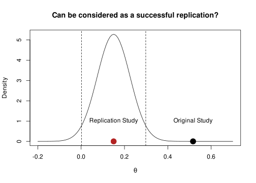
Confidence Interval, replication within original
Another approach check if the replication attempt \(\theta_{rep}\) is contained in the % confidence interval of the original study \(\theta_{orig}\). Formally:
\[ \theta_{orig} - \Phi(\alpha/2) \sqrt{\sigma^2_{orig}} < \theta_{rep} < \theta_{orig} + \Phi(\alpha/2) \sqrt{\sigma^2_{orig}} \]
Where \(\Phi\) is the cumulative standard normal distribution, \(\alpha\) is the type-1 error rate.
- Take into account the size of the effect and the precision of \(\theta_{orig}\)
- The original study is assumed to be a reliable estimation
- No extension for many-to-one designs
- Low precise original studies lead to higher success rate
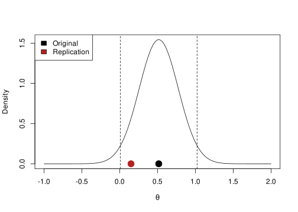
Confidence Interval, replication within original
One potential problem of this method regards that low precise original studies are “easier” to replicate due to larger confidence intervals.
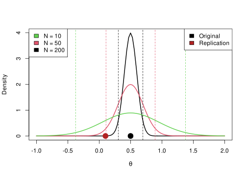
Confidence Interval, original within replication
The same approach can be applied checking if the original effect size is contained within the replication confidence interval. Clearly these methods depends on the precision of studies. Formally:
\[ \theta_{rep} - \Phi(\alpha/2) \sqrt{\sigma_{rep}^2} < \theta_{orig} < \theta_{rep} + \Phi(\alpha/2) \sqrt{\sigma_{rep}^2} \]
The method has the same pros and cons of the previous approach. One advantage is that usually replication studies are more precise (higher sample size) thus the parameter and the % CI is more reliable.
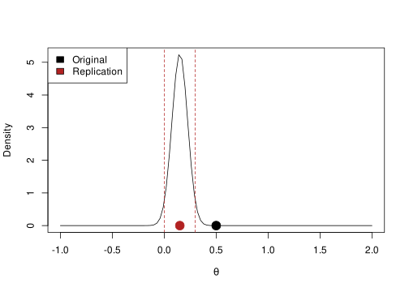
Prediction interval (PI), what to expect from a replication
One problem of the previous approaches is taking into account only the uncertainty of the original or the replication study. Patil, Peng, and Leek (2016) and Spence and Stanley (2016) proposed a method to take into account both sources of uncertainty.
If the original and replication studies comes from the same population, the sampling distribution of the difference is centered on 0 with a certain standard error \(\theta_{orig} - \theta_{rep_0} \sim \mathcal{N}\left( 0, \sqrt{\sigma^2_{\hat \theta_{orig} - \hat \theta_{rep}}} \right)\) (subscript \(0\) to indicate that is expected to be sampled from the same population as \(\theta_{orig}\))
\[ \hat \theta_{orig} \pm z_{95\%} \sqrt{\sigma^2_{\theta_{orig} - \theta_{rep}}} \]
If factors other than standard error influence the replication result, \(\theta_{rep_0}\) is not expected to be contained within the 95% prediction interval.
Prediction interval (PI), what to expect from a replication
In the case of a (un)standardized mean difference we can compute the prediction interval as:
\[ \sqrt{\sigma^2_{\epsilon_{\hat \theta_{orig} - \hat \theta_{rep_0}}}} = \sqrt{\left( \frac{\hat \sigma^2_{o1}}{n_{o1}} +\frac{\hat \sigma^2_{o2}}{n_{o2}}\right) + \left(\frac{\hat \sigma^2_{o1}}{n_{r1}} + \frac{\hat\sigma^2_{o2}}{n_{r2}}\right)} \]
The first term is just the standard error of the difference between the two groups in the original study and the second term is the standard error of the hypothetical replication study assuming the same standard deviation of the original but a different \(n\).
In this way we estimate an interval where, combining sampling variance from both studies and assuming that they comes from the same population, the replication should fall.
Prediction interval (PI), what to expect from a replication
set.seed(2025)
o1 <- rnorm(50, 0.5, 1) # group 1
o2 <- rnorm(50, 0, 1) # group 2
od <- mean(o1) - mean(o2) # effect size
se_o <- sqrt(var(o1)/50 + var(o2)/50) # standard error of the difference
n_r <- 100 # sample size replication
se_o_r <- sqrt(se_o^2 + (var(o1)/100 + var(o2)/100))
od + qnorm(c(0.025, 0.975)) * se_o_r#> [1] 0.325520 1.298378
Code
par(mar = c(4, 4, 0.1, 0.1))
curve(dnorm(x, od, se_o_r), od - se_o_r*4, od + se_o_r*4, lwd = 2, xlab = latex2exp::TeX("$\\theta$"), ylab = "Density")
abline(v = od + qnorm(c(0.025, 0.975)) * se_o_r, lty = "dashed")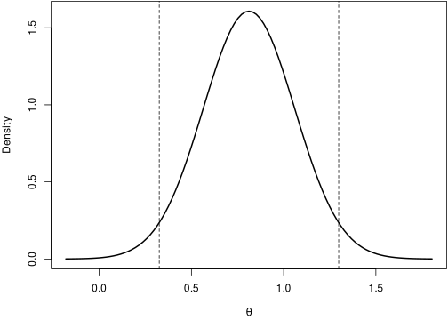
- Take into account uncertainty of both studies
- We can plan a replication using the standard deviation of the original study and the expected sample size
- Low precise original studies lead to wide PI. For a replication study is difficult to fall outside the PI
- Mainly for one-to-one replications design
Mathur & VanderWeele (2020) \(p_{orig}\)
Mathur & VanderWeele (2020) proposed a new method based on the prediction interval to calculate a p value \(p_{orig}\) representing the probability that \(\theta_{orig}\) is consistent with the replications. This method is suited for many-to-one replication designs. Formally:
\[ P_{orig} = 2 \left[ 1 - \Phi \left( \frac{|\hat \theta_{orig} - \hat \mu_{\theta_{rep}}|}{\sqrt{\hat \tau^2 + \sigma^2_{orig} + \hat{SE}^2_{\hat \mu_{\theta_{rep}}}}} \right) \right] \]
- \(\mu_{\theta_{rep}}\) is the pooled (i.e., meta-analytic) estimation of the \(k\) replications
- \(\tau^2\) is the variance among replications
It is interpreted as the probability that \(\theta_{orig}\) is equal or more extreme that what observed. A very low \(p_{orig}\) suggest that the original study is inconsistent with replications.
- Suited for many-to-one designs
- We take into account all sources of uncertainty
- We have a p-value
The code is implemented in the Replicate and MetaUtility R packages:
tau2 <- 0.05
theta_rep <- 0.2
theta_orig <- 0.7
n_orig <- 30
n_rep <- 100
k <- 20
replications <- sim_studies(k, theta_rep, tau2, n_rep, n_rep)
original <- sim_studies(1, theta_orig, 0, n_orig, n_orig)
fit_rep <- metafor::rma(yi, vi, data = replications) # random-effects meta-analysis
Replicate::p_orig(original$yi, original$vi, fit_rep$b[[1]], fit_rep$tau2, fit_rep$se^2)#> [1] 0.5563241
Code
# standard errors assuming same n and variance 1
se_orig <- sqrt(4/(n_orig * 2))
se_rep <- sqrt(4/(n_rep * 2))
se_theta_rep <- sqrt(1/((1/(se_rep^2 + tau2)) * k)) # standard error of the random-effects estimate
sep <- sqrt(tau2 + se_orig^2 + se_theta_rep^2) # z of p-orig denominator
curve(dnorm(x, theta_rep, sep), theta_rep - 4*sep, theta_rep + 4*sep, ylab = "Density", xlab = latex2exp::TeX("\\theta"))
points(theta_orig, 0.02, pch = 19, cex = 2)
abline(v = qnorm(c(0.025, 0.975), theta_rep, sep), lty = "dashed", col = "firebrick")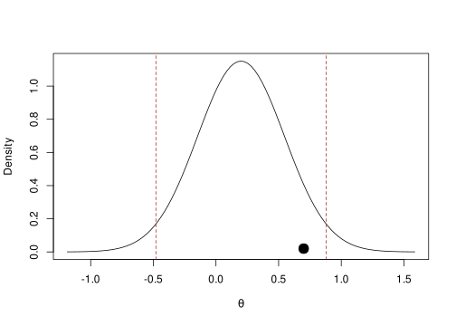
Mathur & VanderWeele (2020) \(\hat P_{> 0}\)
Another related metric is the \(\hat P_{> 0}\), representing the proportion of replications following the same direction as the original effect. Before simply computing the proportions we need to adjust the estimated \(\theta_{rep_i}\) with a shrinkage factor:
\[ \tilde{\theta}_{rep_i} = (\theta_{rep_i} - \mu_{\theta_{rep_i}}) \sqrt{\frac{\hat \tau^2}{\hat \tau^2 + v_{rep_i}}} \]
This method is somehow similar to the vote counting but we are adjusting the effects taking into account \(\tau^2\).
# compute calibrated estimation for the replications
# use restricted maximum likelihood to estimate tau2 under the hood
theta_sh <- MetaUtility::calib_ests(replications$yi, replications$sei, method = "REML")
mean(theta_sh > 0)#> [1] 0.75
The authors suggest a bootstrapping approach for making inference on \(\hat P_{> 0}\)
nboot <- 1e4
theta_boot <- matrix(0, nrow = nboot, ncol = k)
for(i in 1:nboot){
idx <- sample(1:nrow(replications), nrow(replications), replace = TRUE)
replications_boot <- replications[idx, ]
theta_cal <- MetaUtility::calib_ests(replications_boot$yi,
replications_boot$sei,
method = "REML")
theta_boot[i, ] <- theta_cal
}
# calculate
p_greater_boot <- apply(theta_boot, 1, function(x) mean(x > 0))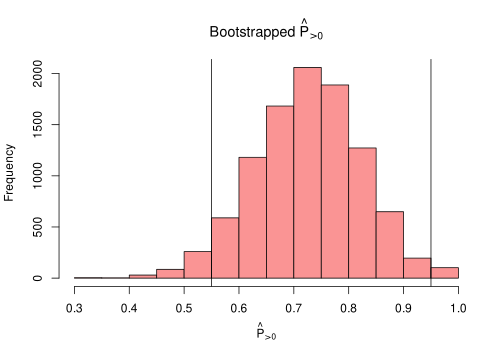
Mathur & VanderWeele (2020) \(\hat P_{\gtrless q*}\)
Instead of using 0 as threshold, we can use meaningful effect size to be considered as low but different from 0. \(\hat P_{\gtrless q*}\) is the proportion of (calibrated) replications greater or lower than the \(q*\) value. This framework is similar to equivalence and minimum effect size testing (Lakens, Scheel, and Isager 2018).
q <- 0.2 # minimum non zero effect
fit <- metafor::rma(yi, vi, data = replications)
# see ?MetaUtility::prop_stronger
MetaUtility::prop_stronger(q = q,
M = fit$b[[1]],
t2 = fit$tau2,
tail = "above",
estimate.method = "calibrated",
ci.method = "calibrated",
dat = replications,
yi.name = "yi",
vi.name = "vi")#> est se lo hi bt.mn shapiro.pval
#> 1 0.35 0.1137901 0.1 0.55 0.3573 0.5224829
Combining original and replications
Another approach is to combine the original and replication results (both one-to-one and many-to-one) using a meta-analysis model. Then we can test if the pooled estimate is different from 0 or another meaningful value.
- Use all the available information, especially when fitting a random-effects model
- Take into account the precision by inverse-variance weighting
- Did not consider the publication bias
- For one-to-one designs only a fixed-effects model can be used
# fixed-effects
fit_fixed <- rma(yi, vi, method = "FE")
summary(fit_fixed)#>
#> Fixed-Effects Model (k = 20)
#>
#> logLik deviance AIC BIC AICc
#> 20.7415 -0.0000 -39.4829 -38.4872 -39.2607
#>
#> I^2 (total heterogeneity / total variability): 0.00%
#> H^2 (total variability / sampling variability): 0.00
#>
#> Test for Heterogeneity:
#> Q(df = 19) = 0.0000, p-val = 1.0000
#>
#> Model Results:
#>
#> estimate se zval pval ci.lb ci.ub
#> 0.2000 0.0316 6.3246 <.0001 0.1380 0.2620 ***
#>
#> ---
#> Signif. codes: 0 '***' 0.001 '**' 0.01 '*' 0.05 '.' 0.1 ' ' 1
# fixed-effects
fit_random <- rma(yi, vi, method = "REML")
summary(fit_random)#>
#> Random-Effects Model (k = 20; tau^2 estimator: REML)
#>
#> logLik deviance AIC BIC AICc
#> 19.7044 -39.4088 -35.4088 -33.5199 -34.6588
#>
#> tau^2 (estimated amount of total heterogeneity): 0 (SE = 0.0065)
#> tau (square root of estimated tau^2 value): 0
#> I^2 (total heterogeneity / total variability): 0.00%
#> H^2 (total variability / sampling variability): 1.00
#>
#> Test for Heterogeneity:
#> Q(df = 19) = 0.0000, p-val = 1.0000
#>
#> Model Results:
#>
#> estimate se zval pval ci.lb ci.ub
#> 0.2000 0.0316 6.3246 <.0001 0.1380 0.2620 ***
#>
#> ---
#> Signif. codes: 0 '***' 0.001 '**' 0.01 '*' 0.05 '.' 0.1 ' ' 1
The previous approach can be also implemented combining replications into a single effect and then compare the original with the combined replication study.
This is similar to using the CI or PI approaches but the replication effect will probably by very precise due to pooling multiple studies.
Q Statistics
An interesting proposal is using the Q statistics (Hedges and Schauer 2019a, 2019b, 2021, 2019c; Jacob M. Schauer 2022; J. M. Schauer and Hedges 2021; Jacob M. Schauer and Hedges 2020), commonly used in meta-analysis to assess the presence of heterogeneity. Formally:
\[ Q = \sum_{i = 1}^{k} \frac{(\theta_i - \bar \theta_w)^2}{\sigma^2_i} \]
Where \(\bar \theta_w\) is the inverse-variance weighted average (i.g., fixed-effect model). The Q statistics is essentially a weighted sum of squares. Under the null hypothesis where all studies are equal \(\theta_1 = \theta_2, ... = \theta_i\) the Q statistics has a \(\chi^2\) distribution with \(k - 1\) degrees of freedom. Under the alternative hypothesis the distribution is a non-central \(\chi^2\) with non centrality parameter \(\lambda\). The expected value of the \(Q\) is \(E(Q) = v + \lambda\), where \(v\) are the degrees of freedom.
Q Statistics
Hedges & Schauer proposed to use the Q statistics to evaluate the consistency of a series of replications:
- In case of exact replication, \(\lambda = 0\) because \(\theta_1 = \theta_2, ... = \theta_k\).
- In case of approximate replication, \(\lambda < \lambda_0\) where \(\lambda_0\) is the maximum value considered as equal to null (i.e., 0).
This approach is testing the consistency (i.e., homogeneity) of replications. A successful replication should minimize the heterogeneity and the presence of a significant Q statistics should bring evidence for not replicating the effect1.
Q Statistics
The method has been expanded and formalized in several papers with different objectives:
. . .
- to cover different replications setup (burden of proof on replicating vs non-replicating, many-to-one and one-to-one, etc.)
. . .
- interpret and choose the \(\lambda\) parameter given that is the core of the approach
. . .
- evaluating the power and statistical properties under different replication scenarios
. . .
- the standard implementation put the burden of proof on non-replication. Thus \(H_0\) is that studies replicates. They provided also a series of tests with the opposite formulation.
Q Statistics
In the case of evaluating an exact replication we can use the Qrep() function that simply calculate the p-value based on the Q sampling distribution.
Qrep <- function(yi, vi, lambda0 = 0, alpha = 0.05){
fit <- metafor::rma(yi, vi)
k <- fit$k
Q <- fit$QE
df <- k - 1
Qp <- pchisq(Q, df = df, ncp = lambda0, lower.tail = FALSE)
pval <- ifelse(Qp < 0.001, "p < 0.001", sprintf("p = %.3f", Qp))
lambda <- ifelse((Q - df) < 0, 0, (Q - df))
res <- list(Q = Q, lambda = lambda, pval = Qp, df = df, k = k, alpha = alpha, lambda0 = lambda0)
H0 <- ifelse(lambda0 != 0, paste("H0: lambda <", lambda0), "H0: lambda = 0")
title <- ifelse(lambda0 != 0, "Q test for Approximate Replication", "Q test for Exact Replication")
cli::cli_rule()
cat(cli::col_blue(cli::style_bold(title)), "\n\n")
cat(sprintf("Q = %.3f (df = %s), lambda = %.3f, %s", res$Q, res$df, lambda, pval), "\n")
cat(H0, "\n")
cli::cli_rule()
class(res) <- "Qrep"
invisible(res)
}#> Q test for Exact Replication
#>
#> Q = 367.321 (df = 99), lambda = 268.321, p < 0.001
#> H0: lambda = 0
Qres <- Qrep(dat$yi, dat$vi)#> Q test for Exact Replication
#>
#> Q = 367.321 (df = 99), lambda = 268.321, p < 0.001
#> H0: lambda = 0
plot.Qrep(Qres)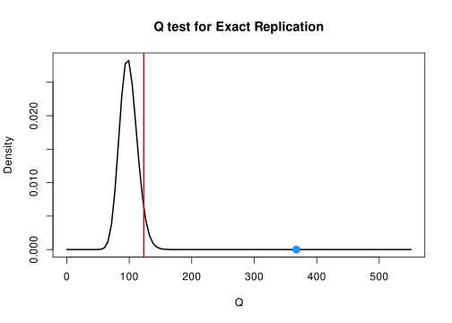
Q Statistics
In case of approximate replication we need to set \(\lambda_0\) to a meaningful value but the overall test is the same. The critical \(Q\) is no longer evaluated with a central \(\chi^2\) but a non-central \(\chi^2\) with \(\lambda_0\) as non-centrality parameter.
Hedges and Schauer (2019c) provide different strategies to choose \(\lambda_0\). They found that under some assumptions, \(\lambda = (k - 1) \frac{\tau^2}{\tilde{v}}\)
Given that we introduced the \(I^2\) statistics we can derive a \(\lambda_0\) based in \(I^2\). F. L. Schmidt and Hunter (2014) proposed that when \(\tilde{v}\) is at least 75% of total variance \(\tilde{v} + \tau^2\) thus \(\tau^2\) could be considered neglegible. This corresponds to a \(I^2 = 25%\) and a ratio \(\frac{\tau^2}{\tilde{v}} = 1/3\) thus \(\lambda_0 = \frac{(k - 1)}{3}\) can be considered a neglegible heterogeneity
k <- 100
dat <- sim_studies(k, 0.5, 0, 50, 50)
Qrep(dat$yi, dat$vi, lambda0 = (k - 1)/3)#> Q test for Approximate Replication
#>
#> Q = 98.121 (df = 99), lambda = 0.000, p = 0.977
#> H0: lambda < 33
Small Telescopes (Simonsohn 2015)
Simonsohn (2015) introduced 3 main questions when evaluating replicability:
. . .
- When we combine data from the original and replication study, what is our best guess of the overall effect?
. . .
meta-analysis
. . .
- Is the effect of the replication study different from the original study?
. . .
meta-analysis and standard tests, but problematic in terms of statistical power
. . .
- Does the replication study suggest that the effect of interest is undetectable different from zero?
. . .
small telescopes
Small Telescopes (Simonsohn 2015)
The idea is simple but quite powerful and insightful. Let’s assume that an original study found an effect of \(y_{orig} = 0.7\) on a two-sample design with \(n = 20\) per group.
. . .
- we define a threshold as the effect size that is associated with a certain low power level e.g., \(33\%\) given the sample size i.e. \(\theta_{small} = 0.5\)
- the replication study found an effect of \(y{rep} = 0.2\) with \(n = 100\) subjects
. . .
If the \(y_{rep}\) is lower (i.e., the upper bound of the confidence interval) than the small effect (\(\theta_{small} = 0.5\)) we conclude that the effect is probably so low that could not have been detected by the original study. Thus there is no evidence for a replication.
Small Telescopes (Simonsohn 2015)
We can use the custom small_telescope() function on simulated data:
small_telescope <- function(or_d,
or_se,
rep_d,
rep_se,
small,
ci = 0.95){
# quantile for the ci
qs <- c((1 - ci)/2, 1 - (1 - ci)/2)
# original confidence interval
or_ci <- or_d + qnorm(qs) * or_se
# replication confidence interval
rep_ci <- rep_d + qnorm(qs) * rep_se
# small power
is_replicated <- rep_ci[2] > small
msg_original <- sprintf("Original Study: d = %.3f %s CI = [%.3f, %.3f]",
or_d, ci, or_ci[1], or_ci[2])
msg_replicated <- sprintf("Replication Study: d = %.3f %s CI = [%.3f, %.3f]",
rep_d, ci, rep_ci[1], rep_ci[2])
if(is_replicated){
msg_res <- sprintf("The replicated effect is not smaller than the small effect (%.3f), (probably) replication!", small)
msg_res <- cli::col_green(msg_res)
}else{
msg_res <- sprintf("The replicated effect is smaller than the small effect (%.3f), no replication!", small)
msg_res <- cli::col_red(msg_res)
}
out <- data.frame(id = c("original", "replication"),
d = c(or_d, rep_d),
lower = c(or_ci[1], rep_ci[1]),
upper = c(or_ci[2], rep_ci[2]),
small = small
)
# nice message
cat(
msg_original,
msg_replicated,
cli::rule(),
msg_res,
sep = "\n"
)
invisible(out)
}Small Telescopes (Simonsohn 2015)
set.seed(2025)
d <- 0.2 # real effect
# original study
or_n <- 20
or_d <- 0.7
or_se <- sqrt(1/20 + 1/20)
d_small <- pwr::pwr.t.test(or_n, power = 0.33)$d
# replication
rep_n <- 100 # sample size of replication study
g0 <- rnorm(rep_n, 0, 1)
g1 <- rnorm(rep_n, d, 1)
rep_d <- mean(g1) - mean(g0)
rep_se <- sqrt(var(g1)/rep_n + var(g0)/rep_n)Here we are using the pwr::pwr.t.test() to compute the effect size \(\theta_{small}\) (in code d) associated with 33% power.
Small Telescopes (Simonsohn 2015)
small_telescope(or_d, or_se, rep_d, rep_se, d_small, ci = 0.95)#> Original Study: d = 0.700 0.95 CI = [0.080, 1.320]
#> Replication Study: d = 0.214 0.95 CI = [-0.061, 0.490]
#> ────────────────────────────────────────────────────────────────────────────────
#> The replicated effect is smaller than the small effect (0.493), no replication!
And a (quite over-killed) plot:
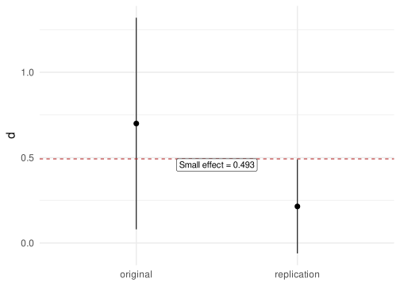
Bayesian Methods
Bayes Factor
Verhagen and Wagenmakers (2014) proposed a method to estimate the evidence of a replication study. The core topics to understand the method are:
- Bayesian hypothesis testing using the Bayes Factor (see, Rouder et al. 2009)
- Bayes Factor using the Savage-Dickey density ratio (SDR, Wagenmakers et al. 2010)
Bayesian inference
Bayesian inference is the statistical procedure where prior beliefs about a phenomenon are combined, using the Bayes theorem, with evidence from data to obtain the posterior beliefs.
. . .
The interesting part is that the researcher express the prior beliefs in probabilistic terms. Then after collecting data, evidence from the experiment is combined increasing or decreasing the plausibility of prior beliefs.
. . .
Let’s make an (not a very innovative 😄) example. We need to evaluate the fairness of a coin. The crucial parameter is \(\theta\) that is the probability of success (e.g., head). We have our prior belief about the coin (e.g., fair but with some uncertainty). We toss the coin \(k\) times and we observe \(x\) heads. What are my conclusions?
Bayesian inference
\[ p(\theta|D) = \frac{p(D|\theta) \; p(\theta)}{p(D)} \] Where \(\theta\) is our parameter and \(D\) the data. \(p(\theta|D)\) is the posterior distribution that is the product between the likelihood \(p(D|\theta)\) and the prior \(p(\theta)\). \(p(D)\) is the probability of the data (aka marginal likelihood) and is necessary only for the posterior to be a proper probability distribution.
We can “read” the formula as: The probability of the parameter given the data is the product between the likelihood of the data given the parameter and the prior probability of the parameter.
Bayesian inference
Let’s express our prior belief in probabilistic terms:
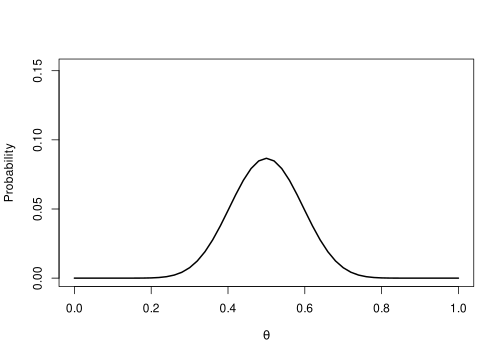
Bayesian inference
Now we collect data and we observe \(x = 40\) tails out of \(k = 50\) trials thus \(\hat{\theta} = 0.8\) and compute the likelihood:
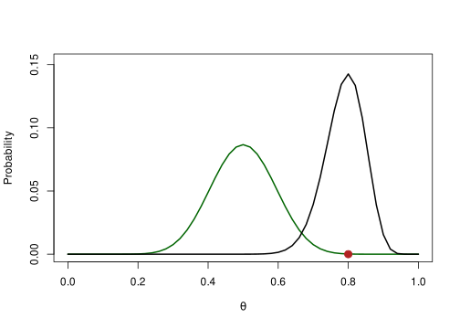
Bayesian inference
Finally we combine, using the Bayes rule, prior and likelihood to obtain the posterior distribution:
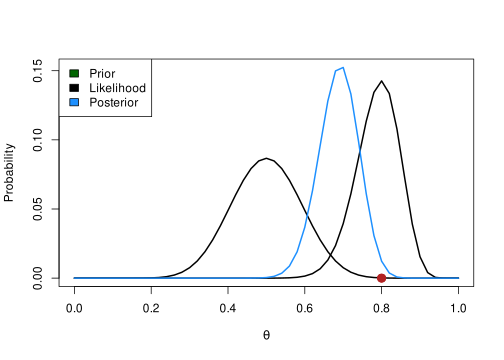
Bayes Factor
The idea of the Bayes Factor is computing the evidence of the data under two competing hypotheses, \(H_0\) and \(H_1\) (~ \(\theta\) in our previous example):
\[ \frac{p(H_0|D)}{p(H_1|D)} = \frac{f(D|H_0)}{f(D|H_1)} \times \frac{p(H_0)}{p(H_1)} \]
Where \(f\) is the likelihood function, \(y\) are the data. The \(\frac{p(H_0)}{p(H_1)}\) is the prior odds of the two hypothesis. The Bayes Factor is the ratio between the likelihood of the data under the two hypotheses.
Bayes Factor using the SDR
Calculating the BF can be problematic in some condition. The SDR is a convenient shortcut to calculate the Bayes Factor (Wagenmakers et al. 2010). The idea is that the ratio between the prior and posterior density distribution for the \(H_1\) is an estimate of the Bayes factor calculated in the standard way.
\[ BF_{01} = \frac{p(D|H_0)}{p(D|H_1)} = \frac{p(\theta = x|D, H_1)}{p(\theta = x, H_1)} \]
Where \(\theta\) is the parameter of interest and \(x\) is the null value under \(H_0\) e.g., 0. and \(D\) are the data.
Bayes Factor using the SDR, Example:
Following the previous example \(H_0: \theta = 0.5\). Under \(H_1\) we use a completely uninformative prior by setting \(\theta \sim Beta(1, 1)\).
We flip again the coin 20 times and we found that \(\hat \theta = 0.75\).
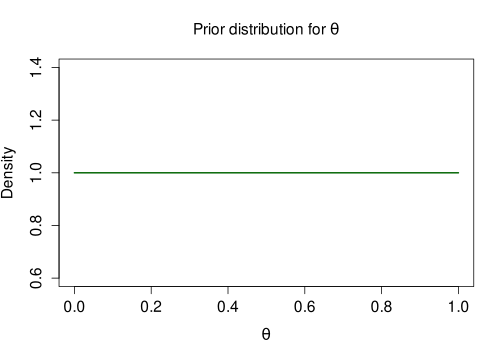
Bayes Factor using the SDR, Example:
The ratio between the two black dots is the Bayes Factor.
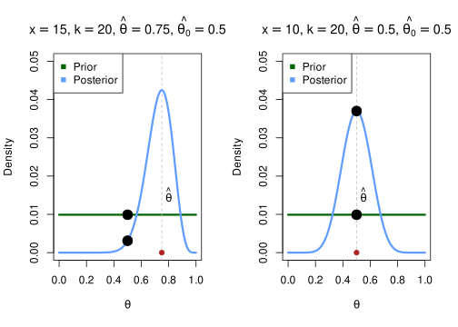
If the probability density of the null value decrease after seeing data (from prior to posterior) this means that the Bayes factor should favor the alternative hypothesis. On the left, the density of 0.5 is lower after seeing the data –> evidence for H1 On the right the density of 0.5 is higher after seeing the data –> evidence for H0
Verhagen and Wagenmakers (2014) model2
The idea is using the posterior distribution of the original study as prior for a Bayesian hypothesis testing where:
- \(H_0: \theta_{rep} = 0\) thus there is no effect in the replication study
- \(H_1: \theta_{rep} \neq 0\) and in particular is distributed as \(\delta \sim \mathcal{N}(\theta_{orig}, \sigma^2_{orig})\) where \(\theta_{orig}\) and \(\sigma^2_{orig}\) are the mean and standard error of the original study
If \(H_0\) is more likely after seeing the data, there is evidence against the replication (i.e., \(BF_{r0} > 1\)) otherwise there is evidence for a successful replication (\(BF_{r1} > 1\)).
Verhagen and Wagenmakers (2014) model
Warning
Disclaimer: The actual implementation of Verhagen and Wagenmakers (2014) is different (they use the \(t\) statistics). The proposed implementation for the current workshop use a standard linear model.
Example
Let’s assume that the original study (\(n = 30\)) estimate a \(y_{orig} = 0.4\) and a standard error of \(\sigma^2/n\).
# original study
n <- 30
yorig <- 0.4
se <- sqrt(1/30)
Note
The assumption of Verhagen & Wagenmakers (2014) is that the original study performed a Bayesian analysis with a completely flat prior. Thus the confidence interval is the same as the Bayesian credible interval.
Example
For this reason, the posterior distribution of the original study can be approximated as:
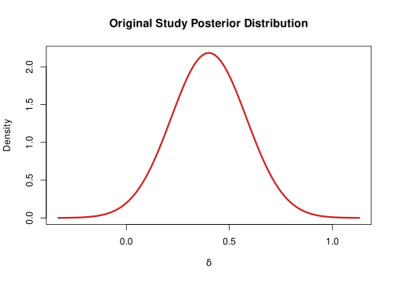
With an uninformative prior the credible interval is the same as the confidence interval
Example
Let’s imagine that a new study tried to replicate the original one. They collected \(n = 100\) participants with the same protocol and found and effect of \(y_{rep} = 0.1\).
nrep <- 100
yrep <- MASS::mvrnorm(nrep, mu = 0.1, Sigma = 1, empirical = TRUE)[, 1]
dat <- data.frame(y = yrep)
hist(yrep, main = "Replication Study (n1 = 100)", xlab = latex2exp::TeX("$y_{rep}$"))
abline(v = mean(yrep), lwd = 2, col = "firebrick")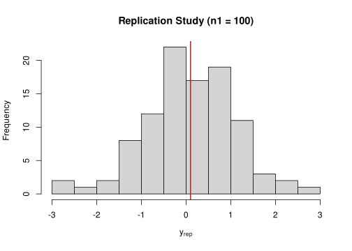
Example
We can analyze these data with an intercept-only regression model setting as prior the posterior distribution of the original study:
# setting the prior on the intercept parameter
prior <- rstanarm::normal(location = yorig,
scale = se)
# fitting the bayesian linear regression
fit <- stan_glm(y ~ 1,
data = dat,
prior_intercept = prior,
refresh = FALSE)
summary(fit)#>
#> Model Info:
#> function: stan_glm
#> family: gaussian [identity]
#> formula: y ~ 1
#> algorithm: sampling
#> sample: 4000 (posterior sample size)
#> priors: see help('prior_summary')
#> observations: 100
#> predictors: 1
#>
#> Estimates:
#> mean sd 10% 50% 90%
#> (Intercept) 0.2 0.1 0.1 0.2 0.3
#> sigma 1.0 0.1 0.9 1.0 1.1
#>
#> Fit Diagnostics:
#> mean sd 10% 50% 90%
#> mean_PPD 0.2 0.1 0.0 0.2 0.3
#>
#> The mean_ppd is the sample average posterior predictive distribution of the outcome variable (for details see help('summary.stanreg')).
#>
#> MCMC diagnostics
#> mcse Rhat n_eff
#> (Intercept) 0.0 1.0 2609
#> sigma 0.0 1.0 2608
#> mean_PPD 0.0 1.0 3185
#> log-posterior 0.0 1.0 1693
#>
#> For each parameter, mcse is Monte Carlo standard error, n_eff is a crude measure of effective sample size, and Rhat is the potential scale reduction factor on split chains (at convergence Rhat=1).
Example
We can use the bayestestR::bayesfactor_pointnull() to calculate the BF using the Savage-Dickey density ratio.
bf <- bayestestR::bayesfactor_pointnull(fit, null = 0)
print(bf)#> Bayes Factor (Savage-Dickey density ratio)
#>
#> Parameter | BF
#> -------------------
#> (Intercept) | 0.274
#>
#> * Evidence Against The Null: 0
#>
plot(bf)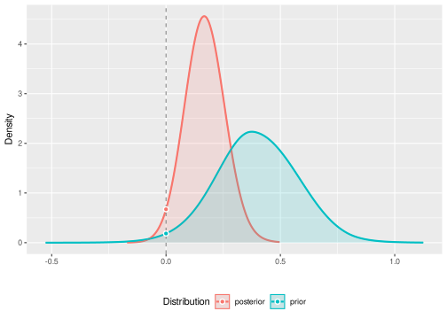
Example
You can also use the bf_replication() function:
bf_replication <- function(mu_original,
se_original,
replication){
# prior based on the original study
prior <- rstanarm::normal(location = mu_original, scale = se_original)
# to dataframe
replication <- data.frame(y = replication)
fit <- rstanarm::stan_glm(y ~ 1,
data = replication,
prior_intercept = prior,
refresh = 0) # avoid printing
bf <- bayestestR::bayesfactor_pointnull(fit, null = 0, verbose = FALSE)
title <- "Bayes Factor Replication Rate"
posterior <- "Posterior Distribution ~ Mean: %.3f, SE: %.3f"
replication <- "Evidence for replication: %3f (log %.3f)"
non_replication <- "Evidence for non replication: %3f (log %.3f)"
if(bf$log_BF > 0){
replication <- cli::col_green(sprintf(replication, exp(bf$log_BF), bf$log_BF))
non_replication <- sprintf(non_replication, 1/exp(bf$log_BF), -bf$log_BF)
}else{
replication <- sprintf(replication, exp(bf$log_BF), bf$log_BF)
non_replication <- cli::col_red(sprintf(non_replication, 1/exp(bf$log_BF), -bf$log_BF))
}
outlist <- list(
fit = fit,
bf = bf
)
cat(
cli::col_blue(title),
cli::rule(),
sprintf(posterior, fit$coefficients, fit$ses),
"\n",
replication,
non_replication,
sep = "\n"
)
invisible(outlist)
}Example
bf_replication(mu_original = yorig, se_original = se, replication = yrep)#> Bayes Factor Replication Rate
#> ────────────────────────────────────────────────────────────────────────────────
#> Posterior Distribution ~ Mean: 0.169, SE: 0.088
#>
#>
#> Evidence for replication: 0.278539 (log -1.278)
#> Evidence for non replication: 3.590164 (log 1.278)
Example
A better custom plot:
bfplot <- data.frame(
prior = rnorm(1e5, yorig, se),
posterior = rnorm(1e5, fit$coefficients, fit$ses)
)
plt <- ggplot() +
stat_function(geom = "line",
aes(color = "Original Study (Prior)"),
linewidth = 1,
alpha = 0.3,
fun = dnorm, args = list(mean = yorig, sd = se)) +
stat_function(geom = "line",
linewidth = 1,
aes(color = "Replication Study (Posterior)"),
fun = dnorm, args = list(mean = fit$coefficients, sd = fit$ses)) +
xlim(c(-0.5, 1.2)) +
geom_point(aes(x = c(0, 0), y = c(dnorm(0, yorig, sd = se),
dnorm(0, fit$coefficients, sd = fit$ses))),
size = 3) +
xlab(latex2exp::TeX("\\delta")) +
ylab("Density") +
theme(legend.position = "bottom",
legend.title = element_blank())Example
A better custom plot:
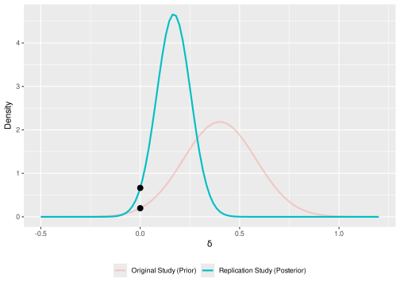
Exercises
Ego-Depletion and self-control Hagger et al. (2016)
Self-control has been regarded as an individual’s capacity to actively override or inhibit impulses; suppress urges; resist temptations; and break ingrained, well-learned behaviors or habits (Hagger et al. 2016).
Baumeister, Vohs, and Tice (2007) proposed a limited-resource model of self-control
The ego-depletion effect is a behavioral effect where being engaged in a task requiring self-control reduce the strenght of self-control on a subsequent task (Baumeister, Vohs, and Tice 2007).
Ego-Depletion and self-control Hagger et al. (2016)
Hagger et al. (2010) published a meta-analysis finding a standardized effect size of \(d = 0.62\) (\(SE = 0.02\), \(95\% CI = [0.57, 0.67]\)). They analyzed \(k = 198\) studies with a total of \(n = 10782\) participants.
However, Hagger et al. (2016) suggest that the effect could be inflated by publication bias and questioned the presence of the effect
Hagger et al. (2016) conducted a multi-lab replication study of the effect. See the OSF project https://osf.io/4zy8k/
Ego-Depletion and self-control Hagger et al. (2016)
The dataset can be found in slides/03-replication-methods/objects/hagger2016.rds:
#> id m_exp sd_exp m_ctrl sd_ctrl n_exp n_ctrl yi vi
#> 1 0 NA NA NA NA NA NA 0.620000000 0.00040000
#> 12 lab1 0.855 0.147 0.862 0.189 49 51 -0.040924886 0.04002438
#> 19 lab2 0.904 0.153 0.896 0.141 62 58 0.053955545 0.03338254
#> 110 lab3 0.888 0.207 0.849 0.239 50 49 0.173214156 0.04055969
#> 13 lab4 0.857 0.177 0.864 0.198 75 71 -0.037138032 0.02742256
#> 2 lab5 0.934 0.224 0.848 0.247 64 66 0.362328081 0.03128144
#> 3 lab6 0.941 0.221 0.906 0.215 87 91 0.159900032 0.02255508
#> 14 lab7 0.966 0.177 0.945 0.169 101 102 0.120915277 0.01974092
#> 4 lab8 0.832 0.216 0.845 0.238 63 64 -0.056835612 0.03151073
#> 15 lab9 1.000 0.192 0.956 0.180 50 52 0.234809077 0.03950104
#> 5 lab10 0.855 0.271 0.922 0.244 79 80 -0.258679911 0.02536865
#> 6 lab11 0.789 0.215 0.789 0.207 54 55 0.000000000 0.03670034
#> 7 lab12 0.954 0.162 0.917 0.169 54 63 0.221687125 0.03460156
#> 16 lab13 0.878 0.153 0.875 0.188 60 60 0.017391826 0.03333459
#> 8 lab14 0.923 0.201 0.873 0.198 65 65 0.249147654 0.03100798
#> 9 lab15 0.815 0.237 0.766 0.221 71 68 0.212507870 0.02895283
#> 17 lab16 1.009 0.188 1.068 0.173 54 55 -0.324418361 0.03718312
#> 18 lab17 0.881 0.173 0.919 0.182 48 50 -0.212226656 0.04106313
#> 10 lab18 0.948 0.158 0.949 0.207 43 43 -0.005382076 0.04651180
#> 11 lab19 0.943 0.223 0.885 0.219 47 49 0.260382433 0.04203788
#> 20 lab20 0.948 0.185 0.898 0.188 53 52 0.266150985 0.03843601
#> 21 lab21 0.908 0.204 0.916 0.200 59 56 -0.039328158 0.03481302
#> 22 lab22 0.916 0.185 0.875 0.122 57 57 0.259891849 0.03538396
#> 23 lab23 0.901 0.198 0.917 0.158 53 55 -0.088878058 0.03708631
#> 24 lab24 0.896 0.174 0.860 0.184 99 99 0.200268475 0.02030330
#> type
#> 1 original
#> 12 replication
#> 19 replication
#> 110 replication
#> 13 replication
#> 2 replication
#> 3 replication
#> 14 replication
#> 4 replication
#> 15 replication
#> 5 replication
#> 6 replication
#> 7 replication
#> 16 replication
#> 8 replication
#> 9 replication
#> 17 replication
#> 18 replication
#> 10 replication
#> 11 replication
#> 20 replication
#> 21 replication
#> 22 replication
#> 23 replication
#> 24 replication
Ego-Depletion and self-control Hagger et al. (2016)
#> id m_exp sd_exp m_ctrl sd_ctrl n_exp n_ctrl yi vi
#> 1 0 NA NA NA NA NA NA 0.62000000 0.00040000
#> 12 lab1 0.855 0.147 0.862 0.189 49 51 -0.04092489 0.04002438
#> 19 lab2 0.904 0.153 0.896 0.141 62 58 0.05395555 0.03338254
#> 110 lab3 0.888 0.207 0.849 0.239 50 49 0.17321416 0.04055969
#> 13 lab4 0.857 0.177 0.864 0.198 75 71 -0.03713803 0.02742256
#> 2 lab5 0.934 0.224 0.848 0.247 64 66 0.36232808 0.03128144
#> type
#> 1 original
#> 12 replication
#> 19 replication
#> 110 replication
#> 13 replication
#> 2 replication
- the
idis an identifier for the study. Note that 0 is the original meta-analysis while others are the multi-lab replication studies *_expand*_ctrlare themmean,sdstandard deviation andnsample size of the studies.yiandviare the effect size and the sampling variance of the studies
This is an interesting situation because we have a highly precise but probably biased original study and a probably unbiased multi-lab replications.
Gustatory Disgust on Moral Judgment Ghelfi et al. (2020)
- Eskine and colleagues (2011) found that subjects who drank a bitter beverage before reading six moral vignettes judged the characters’ actions more harshly than did subjects who drank a sweet beverage or water.
- The found an effect of \(d = 1.09\)3
- Ghelfi et al. (2020) conducted a multi-lab study with \(k = 11\) laboratories
Gustatory Disgust on Moral Judgment Ghelfi et al. (2020)
The dataset 04-replication-methods/objects/ghelfi2020.rds contains the original study and the replications:
#>
#> id m_exp s_exp n_exp m_ctrl s_ctrl n_ctrl type yi
#> 1 0 78.34000 10.83000 15 61.58000 16.880000 21 original 1.1152
#> 2 1 75.28500 10.92395 20 65.36667 17.056364 19 replication 0.6822
#> 3 2 67.08341 11.11722 22 67.51758 12.487700 22 replication -0.0361
#> 4 3 62.25564 17.09394 19 64.25439 14.590814 19 replication -0.1231
#> 5 4 68.99107 11.93297 40 70.70188 15.700467 24 replication -0.1256
#> 6 5 76.52801 13.97302 17 76.64502 11.059971 22 replication -0.0092
#> 7 6 78.22348 11.95674 9 64.04607 20.920061 9 replication 0.7925
#> 8 7 67.02917 14.27363 24 65.93908 12.962434 29 replication 0.0791
#> 9 8 70.20217 11.27462 23 72.54924 12.626843 22 replication -0.1929
#> 10 9 70.19935 12.35952 51 71.70000 14.364429 55 replication -0.1109
#> 11 10 71.79252 14.64755 147 68.30610 13.783661 142 replication 0.2444
#> 12 11 70.20106 17.25785 9 64.76190 8.879799 8 replication 0.3691
#> vi
#> 1 0.1316
#> 2 0.1045
#> 3 0.0877
#> 4 0.1011
#> 5 0.0652
#> 6 0.1001
#> 7 0.2190
#> 8 0.0740
#> 9 0.0863
#> 10 0.0373
#> 11 0.0139
#> 12 0.2167
Steps
- Choose one of the two datasets (or both)
- Load and explore the dataset
- Try to apply the methods explained in the slides. For one-to-one methods pick a random replication study or try the same method for each replication study
- Comment the results:
- Is there evidence for replication?
- Are there differences among replication methods?
References
Baumeister, Roy F, Kathleen D Vohs, and Dianne M Tice. 2007. “The Strength Model of Self-Control.” Curr. Dir. Psychol. Sci. 16 (6): 351–55. https://doi.org/10.1111/j.1467-8721.2007.00534.x.
Brandt, Mark J, Hans IJzerman, Ap Dijksterhuis, Frank J Farach, Jason Geller, Roger Giner-Sorolla, James A Grange, Marco Perugini, Jeffrey R Spies, and Anna van ’t Veer. 2014. “The Replication Recipe: What Makes for a Convincing Replication?” J. Exp. Soc. Psychol. 50 (January): 217–24. https://doi.org/10.1016/j.jesp.2013.10.005.
Bushman, B J, and Morgan C Wang. 2009. “Vote-Counting Procedures in Meta-Analysis.” In The Handbook of Research Synthesis and Meta-Analysis, 207–20. New York, NY: Russell Sage Foundation.
Eskine, Kendall J, Natalie A Kacinik, and Jesse J Prinz. 2011. “A Bad Taste in the Mouth: Gustatory Disgust Influences Moral Judgment: Gustatory Disgust Influences Moral Judgment.” Psychol. Sci. 22 (3): 295–99. https://doi.org/10.1177/0956797611398497.
Ghelfi, Eric, Cody D Christopherson, Heather L Urry, Richie L Lenne, Nicole Legate, Mary Ann Fischer, Fieke M A Wagemans, et al. 2020. “Reexamining the Effect of Gustatory Disgust on Moral Judgment: A Multilab Direct Replication of Eskine, Kacinik, and Prinz (2011).” Advances in Methods and Practices in Psychological Science 3 (1): 3–23. https://doi.org/10.1177/2515245919881152.
Hagger, Martin S, Nikos L D Chatzisarantis, Hugo Alberts, Calvin Octavianus Anggono, Cédric Batailler, Angela R Birt, Ralf Brand, et al. 2016. “A Multilab Preregistered Replication of the Ego-Depletion Effect.” Perspect. Psychol. Sci. 11 (4): 546–73. https://doi.org/10.1177/1745691616652873.
Hagger, Martin S, Chantelle Wood, Chris Stiff, and Nikos L D Chatzisarantis. 2010. “Ego Depletion and the Strength Model of Self-Control: A Meta-Analysis.” Psychol. Bull. 136 (4): 495–525. https://doi.org/10.1037/a0019486.
Hedges, Larry V, and Ingram Olkin. 1980. “Vote-Counting Methods in Research Synthesis.” Psychol. Bull. 88 (2): 359–69. https://doi.org/10.1037/0033-2909.88.2.359.
Hedges, Larry V, and Jacob M Schauer. 2019a. “Consistency of Effects Is Important in Replication: Rejoinder to Mathur and VanderWeele (2019).” Psychol. Methods 24 (5): 576–77. https://doi.org/10.1037/met0000237.
———. 2019b. “More Than One Replication Study Is Needed for Unambiguous Tests of Replication.” J. Educ. Behav. Stat. 44 (5): 543–70. https://doi.org/10.3102/1076998619852953.
———. 2019c. “Statistical Analyses for Studying Replication: Meta-Analytic Perspectives.” Psychol. Methods 24 (5): 557–70. https://doi.org/10.1037/met0000189.
———. 2021. “The Design of Replication Studies.” J. R. Stat. Soc. Ser. A Stat. Soc. 184 (3): 868–86. https://doi.org/10.1111/rssa.12688.
Jeffreys, Harold. 1973. Scientific Inference. Cambridge, England: Cambridge University Press.
Lakens, Daniël, Anne M Scheel, and Peder M Isager. 2018. “Equivalence Testing for Psychological Research: A Tutorial.” Adv. Methods Pract. Psychol. Sci. 1 (2): 259–69. https://doi.org/10.1177/2515245918770963.
Ly, Alexander, Alexander Etz, Maarten Marsman, and Eric-Jan Wagenmakers. 2019. “Replication Bayes Factors from Evidence Updating.” Behav. Res. Methods 51 (6): 2498–508. https://doi.org/10.3758/s13428-018-1092-x.
Mathur, Maya B, and Tyler J VanderWeele. 2019. “Challenges and Suggestions for Defining Replication ‘Success’ When Effects May Be Heterogeneous: Comment on Hedges and Schauer (2019).” Psychol. Methods 24 (5): 571–75. https://doi.org/10.1037/met0000223.
———. 2020. “New Statistical Metrics for Multisite Replication Projects.” J. R. Stat. Soc. Ser. A Stat. Soc. 183 (3): 1145–66. https://doi.org/10.1111/rssa.12572.
Nosek, Brian A, and Timothy M Errington. 2020. “What Is Replication?” PLoS Biol. 18 (3): e3000691. https://doi.org/10.1371/journal.pbio.3000691.
Patil, Prasad, Roger D Peng, and Jeffrey T Leek. 2016. “What Should Researchers Expect When They Replicate Studies? A Statistical View of Replicability in Psychological Science.” Perspect. Psychol. Sci. 11 (4): 539–44. https://doi.org/10.1177/1745691616646366.
Rouder, Jeffrey N, Paul L Speckman, Dongchu Sun, Richard D Morey, and Geoffrey Iverson. 2009. “Bayesian t Tests for Accepting and Rejecting the Null Hypothesis.” Psychon. Bull. Rev. 16 (2): 225–37. https://doi.org/10.3758/PBR.16.2.225.
Schauer, J M, and L V Hedges. 2021. “Reconsidering Statistical Methods for Assessing Replication.” Psychol. Methods 26 (1): 127–39. https://doi.org/10.1037/met0000302.
Schauer, Jacob M. 2022. “Replicability and Meta-Analysis.” In Avoiding Questionable Research Practices in Applied Psychology, edited by William O’Donohue, Akihiko Masuda, and Scott Lilienfeld, 301–42. Cham: Springer International Publishing. https://doi.org/10.1007/978-3-031-04968-2\_14.
Schauer, Jacob M, and Larry V Hedges. 2020. “Assessing Heterogeneity and Power in Replications of Psychological Experiments.” Psychol. Bull. 146 (8): 701–19. https://doi.org/10.1037/bul0000232.
Schmidt, Frank L, and John E Hunter. 2014. Methods of Meta-Analysis: Correcting Error and Bias in Research Findings. 3rd ed. Thousand Oaks, CA: SAGE Publications. https://doi.org/10.4135/9781483398105.
Schmidt, Stefan. 2009. “Shall We Really Do It Again? The Powerful Concept of Replication Is Neglected in the Social Sciences.” Rev. Gen. Psychol. 13 (2): 90–100. https://doi.org/10.1037/a0015108.
Simonsohn, Uri. 2015. “Small Telescopes: Detectability and the Evaluation of Replication Results.” Psychol. Sci. 26 (5): 559–69. https://doi.org/10.1177/0956797614567341.
Spence, Jeffrey R, and David J Stanley. 2016. “Prediction Interval: What to Expect When You’re Expecting … a Replication.” PLoS One 11 (9): e0162874. https://doi.org/10.1371/journal.pone.0162874.
Valentine, Jeffrey C, Anthony Biglan, Robert F Boruch, Felipe González Castro, Linda M Collins, Brian R Flay, Sheppard Kellam, Eve K Mościcki, and Steven P Schinke. 2011. “Replication in Prevention Science.” Prev. Sci. 12 (2): 103–17. https://doi.org/10.1007/s11121-011-0217-6.
Verhagen, Josine, and Eric-Jan Wagenmakers. 2014. “Bayesian Tests to Quantify the Result of a Replication Attempt.” J. Exp. Psychol. Gen. 143 (4): 1457–75. https://doi.org/10.1037/a0036731.
Wagenmakers, Eric-Jan, Tom Lodewyckx, Himanshu Kuriyal, and Raoul Grasman. 2010. “Bayesian Hypothesis Testing for Psychologists: A Tutorial on the Savage–Dickey Method.” Cogn. Psychol. 60 (3): 158–89. https://doi.org/10.1016/j.cogpsych.2009.12.001.
Footnotes
The approach has been debated by a series of opinion papers (see Hedges and Schauer 2019a; Mathur and VanderWeele 2019)↩︎
We recalculated the effect using
metaforthus the results could slightly differ↩︎